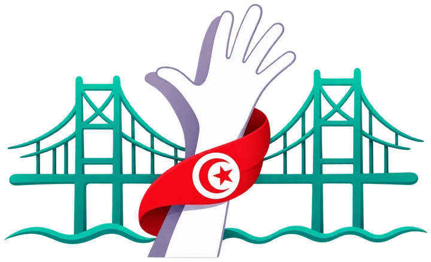

SignBridge
Un patient sourd signe, le médecin lit et entend sa phrase en tounsi ou en français ; le médecin écrit ou dicte, le patient lit la réponse et voit les signes.
Voir les signes et lesquels la caméra reconnaît
La reconnaissance des signes et la dictée en tounsi se font sur cet ordinateur. Peuvent partir sur Internet : les phrases du patient lues par la voix tounsi (ElevenLabs), et la voix du médecin s'il dicte avec le service vocal du navigateur. Les signes médicaux viennent de la langue des signes espagnole (jeu de données SWL-LSE) ; les mots de tous les jours (oui, non, hôpital, les jours…) de la langue des signes tunisienne (jeu de données réalisé avec l'ATILS). Licences CC BY 4.0. Les signes sont montrés par une silhouette, jamais par la vidéo d'une personne.